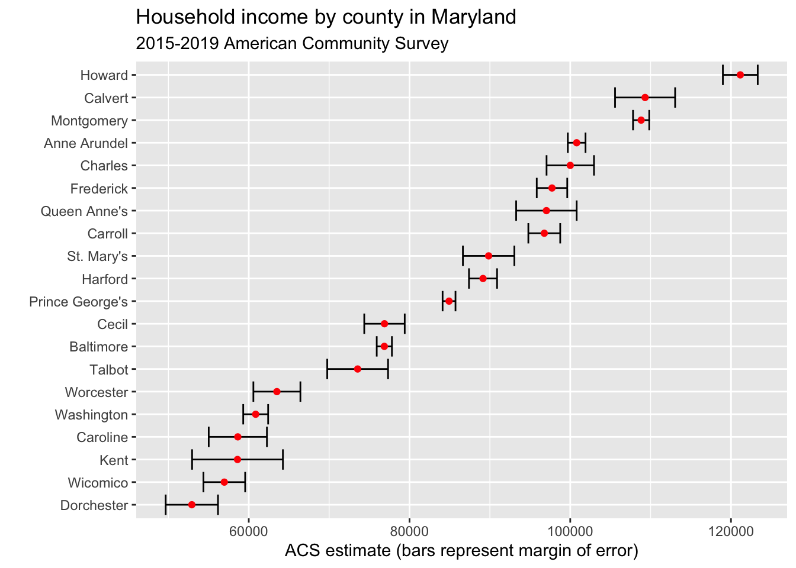

Chapter 17 Intro to APIs: The Census
There is truly an astonishing amount of data collected by the US Census Bureau. First, there’s the Census that most people know – the every 10 year census. That’s the one mandated by the Constitution where the government attempts to count every person in the US. It’s a mind-boggling feat to even try, and billions get spent on it. That data is used first for determining how many representatives each state gets in Congress. From there, the Census gets used to divide up billions of dollars of federal spending.
To answer the questions the government needs to do that, a ton of data gets collected. That, unfortunately, means the Census is exceedingly complicated to work with. The good news is, the Census has an API – an application programming interface. What that means is we can get data directly through the Census Bureau via calls over the internet.
Let’s demonstrate.
We’re going to use a library called tidycensus which makes calls to the Census API in a very tidy way, and gives you back tidy data. That means we don’t have to go through the process of importing the data from a file. I can’t tell you how amazing this is, speaking from experience. The documentation for this library is here. Another R library for working with Census APIs (there is more than one) is this one from Hannah Recht, a journalist with Kaiser Health News.
First we need to install tidycensus using the console: install.packages("tidycensus")
library(tidyverse)
library(tidycensus)To use the API, you need an API key. To get that, you need to apply for an API key with the Census Bureau. It takes a few minutes and you need to activate your key via email. Once you have your key, you need to set that for this session. Just FYI: Your key is your key. Do not share it around.
census_api_key("YOUR KEY HERE", install=TRUE)The two main functions in tidycensus are get_decennial, which retrieves data from the 2000 and 2010 Censuses (and soon the 2020 Census), and get_acs, which pulls data from the American Community Survey, a between-Censuses annual survey that provides estimates, not hard counts, but asks more detailed questions. If you’re new to Census data, there’s a very good set of slides from Kyle Walker, the creator of tidycensus, and he’s working on a book that you can read for free online.
It’s important to keep in mind that Census data represents people - you, your neighbors and total strangers. It also requires some level of definitions, especially about race & ethnicity, that may or may not match how you define yourself or how others define themselves.
So to give you some idea of how complicated the data is, let’s pull up just one file from the decennial Census. We’ll use Summary File 1, or SF1. That has the major population and housing stuff.
sf1 <- load_variables(2010, "sf1", cache = TRUE)
sf1## # A tibble: 8,959 x 3
## name label concept
## <chr> <chr> <chr>
## 1 H001001 Total HOUSING UNITS
## 2 H002001 Total URBAN AND RURAL
## 3 H002002 Total!!Urban URBAN AND RURAL
## 4 H002003 Total!!Urban!!Inside urbanized areas URBAN AND RURAL
## 5 H002004 Total!!Urban!!Inside urban clusters URBAN AND RURAL
## 6 H002005 Total!!Rural URBAN AND RURAL
## 7 H002006 Total!!Not defined for this file URBAN AND RURAL
## 8 H003001 Total OCCUPANCY STATUS
## 9 H003002 Total!!Occupied OCCUPANCY STATUS
## 10 H003003 Total!!Vacant OCCUPANCY STATUS
## # … with 8,949 more rowsNote: There are thousands of variables in SF1. That’s not a typo. Open it in your environment by double clicking. As you scroll down, you’ll get an idea of what you’ve got to choose from.
If you think that’s crazy, try the SF3 file from 2000.
sf3 <- load_variables(2000, "sf3", cache = TRUE)
sf3## # A tibble: 16,520 x 3
## name label concept
## <chr> <chr> <chr>
## 1 H001001 Total HOUSING UNITS [1]
## 2 H002001 Total UNWEIGHTED SAMPLE HOUSING UNITS BY OCC…
## 3 H002002 Total!!Occupied UNWEIGHTED SAMPLE HOUSING UNITS BY OCC…
## 4 H002003 Total!!Vacant UNWEIGHTED SAMPLE HOUSING UNITS BY OCC…
## 5 H003001 Total 100-PERCENT COUNT OF HOUSING UNITS [1]
## 6 H004001 Percent of occupied housing … PERCENT OF HOUSING UNITS IN SAMPLE BY …
## 7 H004002 Percent of vacant housing un… PERCENT OF HOUSING UNITS IN SAMPLE BY …
## 8 H005001 Total URBAN AND RURAL [7]
## 9 H005002 Total!!Urban URBAN AND RURAL [7]
## 10 H005003 Total!!Urban!!Inside urbaniz… URBAN AND RURAL [7]
## # … with 16,510 more rowsYes. That’s more than 16,000 variables to choose from. I told you. Astonishing.
So let’s try to answer a question using the Census. What is the fastest growing state since 2000?
To answer this, we need to pull the total population by state in each of the decennial census. Here’s 2000.
p00 <- get_decennial(geography = "state", variables = "P001001", year = 2000)Now 2010.
p10 <- get_decennial(geography = "state", variables = "P001001", year = 2010)Let’s take a peek at 2010.
p10As you can see, we have a GEOID, NAME, then variable and value. Variable and value are going to be the same. Because those are named the same thing, to merge them together, we need to rename them.
p10 %>% select(GEOID, NAME, value) %>% rename(Population2010=value) -> p2010
p00 %>% select(GEOID, NAME, value) %>% rename(Population2000=value) -> p2000Now we join the data together.
alldata <- p2000 %>% inner_join(p2010)And now we calculate the percent change.
alldata %>% mutate(change = ((Population2010-Population2000)/Population2000)*100) %>% arrange(desc(change))And just like that: Nevada.
You may be asking: hey, wasn’t there a 2020 Census? Where’s that data? The answer is that it’s coming - the Census Bureau has a schedule of releases.
17.1 The ACS
In 2010, the Census Bureau replaced SF3 with the American Community Survey. The Good News is that the data would be updated on a rolling basis. The bad news is that it’s more complicated because it’s more like survey data with a large sample. That means there’s margins of error and confidence intervals to worry about. By default, using get_acs fetches data from the 5-year estimates (currently 2015-2019), but you can specify 1-year estimates for jurisdictions with at least 65,000 people (many counties and cities).
Here’s an example using the 5-year ACS estimates:
What is Maryland’s richest county?
We can measure this by median household income. That variable is B19013_001, so we can get that data like this (I’m narrowing it to the top 20 for simplicity):
md <- get_acs(geography = "county",
variables = c(medincome = "B19013_001"),
state = "MD",
year = 2019)## Getting data from the 2015-2019 5-year ACSmd <- md %>% arrange(desc(estimate)) %>% top_n(20, estimate)
md## # A tibble: 20 x 5
## GEOID NAME variable estimate moe
## <chr> <chr> <chr> <dbl> <dbl>
## 1 24027 Howard County, Maryland medincome 121160 2169
## 2 24009 Calvert County, Maryland medincome 109313 3736
## 3 24031 Montgomery County, Maryland medincome 108820 1009
## 4 24003 Anne Arundel County, Maryland medincome 100798 1103
## 5 24017 Charles County, Maryland medincome 100003 2950
## 6 24021 Frederick County, Maryland medincome 97730 1897
## 7 24035 Queen Anne's County, Maryland medincome 97034 3765
## 8 24013 Carroll County, Maryland medincome 96769 1983
## 9 24037 St. Mary's County, Maryland medincome 89845 3200
## 10 24025 Harford County, Maryland medincome 89147 1748
## 11 24033 Prince George's County, Maryland medincome 84920 802
## 12 24015 Cecil County, Maryland medincome 76887 2518
## 13 24005 Baltimore County, Maryland medincome 76866 944
## 14 24041 Talbot County, Maryland medincome 73547 3785
## 15 24047 Worcester County, Maryland medincome 63499 2925
## 16 24043 Washington County, Maryland medincome 60860 1550
## 17 24011 Caroline County, Maryland medincome 58638 3620
## 18 24029 Kent County, Maryland medincome 58598 5650
## 19 24045 Wicomico County, Maryland medincome 56956 2596
## 20 24019 Dorchester County, Maryland medincome 52917 3255Howard, Calvert, Montgomery, Anne Arundel, Charles. What do they all have in common? Lots of suburban flight from DC and Baltimore. But do the margins of error let us say one county is richer than the other. We can find this out visually using error bars. Don’t worry much about the code here – we’ll cover that soon enough.
md %>%
mutate(NAME = gsub(" County, Maryland", "", NAME)) %>%
ggplot(aes(x = estimate, y = reorder(NAME, estimate))) +
geom_errorbarh(aes(xmin = estimate - moe, xmax = estimate + moe)) +
geom_point(color = "red") +
labs(title = "Household income by county in Maryland",
subtitle = "2015-2019 American Community Survey",
y = "",
x = "ACS estimate (bars represent margin of error)")
As you can see, some of the error bars are quite wide. Some are narrow. But if the bars overlap, it means the difference between the two counties is within the margin of error, and the differences aren’t statistically significant. So is the difference between Calvert and Montgomery significant? Nope. Is the difference between Howard and everyone else significant? Yes it is.
Let’s ask another question of the ACS – did any counties lose income from the time of the global financial crisis to the current 5-year window?
Let’s re-label our first household income data.
md19 <- get_acs(geography = "county",
variables = c(medincome = "B19013_001"),
state = "MD",
year = 2019)## Getting data from the 2015-2019 5-year ACSAnd now we grab the 2010 median household income.
md10 <- get_acs(geography = "county",
variables = c(medincome = "B19013_001"),
state = "MD",
year = 2010)## Getting data from the 2006-2010 5-year ACSWhat I’m going to do next is a lot, but each step is simple. I’m going to join the data together, so each county has one line of data. Then I’m going to rename some fields that repeat. Then I’m going to calculate the minimium and maximum value of the estimate using the margin of error. That’ll help me later. After that, I’m going to calculate a perent change and sort it by that change.
md10 %>%
inner_join(md19, by=c("GEOID", "NAME")) %>%
rename(estimate2010=estimate.x, estimate2019=estimate.y) %>%
mutate(min2010 = estimate2010-moe.x, max2010 = estimate2010+moe.x, min2019 = estimate2019-moe.y, max2019 = estimate2019+moe.y) %>%
select(-variable.x, -variable.y, -moe.x, -moe.y) %>%
mutate(change = ((estimate2019-estimate2010)/estimate2010)*100) %>%
arrange(change)## # A tibble: 24 x 9
## GEOID NAME estimate2010 estimate2019 min2010 max2010 min2019 max2019 change
## <chr> <chr> <dbl> <dbl> <dbl> <dbl> <dbl> <dbl> <dbl>
## 1 24039 Some… 42443 37803 39092 45794 31139 44467 -10.9
## 2 24011 Caro… 58799 58638 56740 60858 55018 62258 -0.274
## 3 24045 Wico… 50752 56956 49313 52191 54360 59552 12.2
## 4 24037 St. … 80053 89845 77742 82364 86645 93045 12.2
## 5 24017 Char… 88825 100003 87268 90382 97053 102953 12.6
## 6 24047 Worc… 55487 63499 52749 58225 60574 66424 14.4
## 7 24043 Wash… 52994 60860 51261 54727 59310 62410 14.8
## 8 24023 Garr… 45760 52617 43729 47791 50065 55169 15.0
## 9 24025 Harf… 77010 89147 75782 78238 87399 90895 15.8
## 10 24031 Mont… 93373 108820 92535 94211 107811 109829 16.5
## # … with 14 more rowsSo according to this, Somerset and Caroline counties lost ground from the financial meltdown to now.
But did they?
Look at the min and max values for both. Is the change statistically significant?
The ACS data has lots of variables, just like the decennial Census does. To browse them, you can do this:
v19 <- load_variables(2019, "acs5", cache=TRUE)And then view v19 to see what kinds of variables are available via the API.
17.2 “Wide” Results
Although one of the chief strengths of tidycensus is that it offers a, well, tidy display of Census data, it also has the ability to view multiple variables spread across columns. This can be useful for creating percentages and comparing multiple variables.
17.3 Sorting Results
You’ll notice that we’ve used arrange to sort the results of tidycensus functions, although that’s done after we create a new variable to hold the data. There’s another way to use arrange that you should know about, one that you can use for exploratory analysis. An example using median household income from 2019:
md19 <- get_acs(geography = "county",
variables = c(medincome = "B19013_001"),
state = "MD",
year = 2019)## Getting data from the 2015-2019 5-year ACSarrange(md19, desc(estimate))## # A tibble: 24 x 5
## GEOID NAME variable estimate moe
## <chr> <chr> <chr> <dbl> <dbl>
## 1 24027 Howard County, Maryland medincome 121160 2169
## 2 24009 Calvert County, Maryland medincome 109313 3736
## 3 24031 Montgomery County, Maryland medincome 108820 1009
## 4 24003 Anne Arundel County, Maryland medincome 100798 1103
## 5 24017 Charles County, Maryland medincome 100003 2950
## 6 24021 Frederick County, Maryland medincome 97730 1897
## 7 24035 Queen Anne's County, Maryland medincome 97034 3765
## 8 24013 Carroll County, Maryland medincome 96769 1983
## 9 24037 St. Mary's County, Maryland medincome 89845 3200
## 10 24025 Harford County, Maryland medincome 89147 1748
## # … with 14 more rowsIn this case we don’t save the sorted results to a variable, we can just see the output in the console.